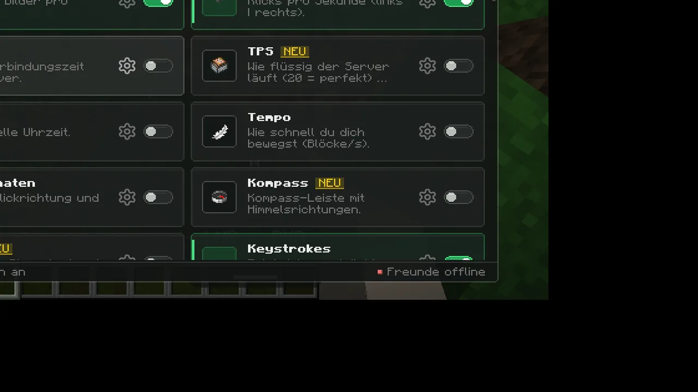
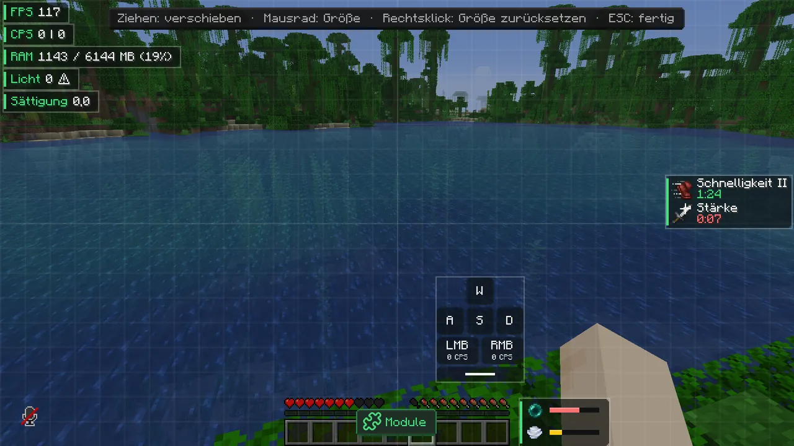
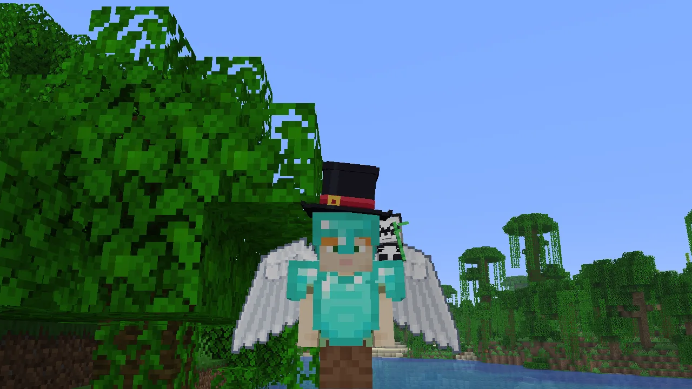
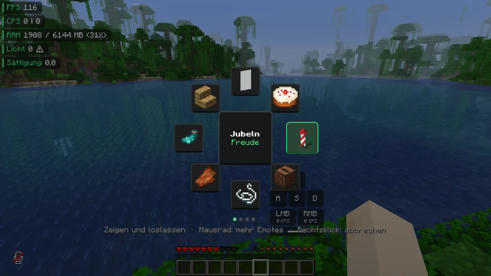
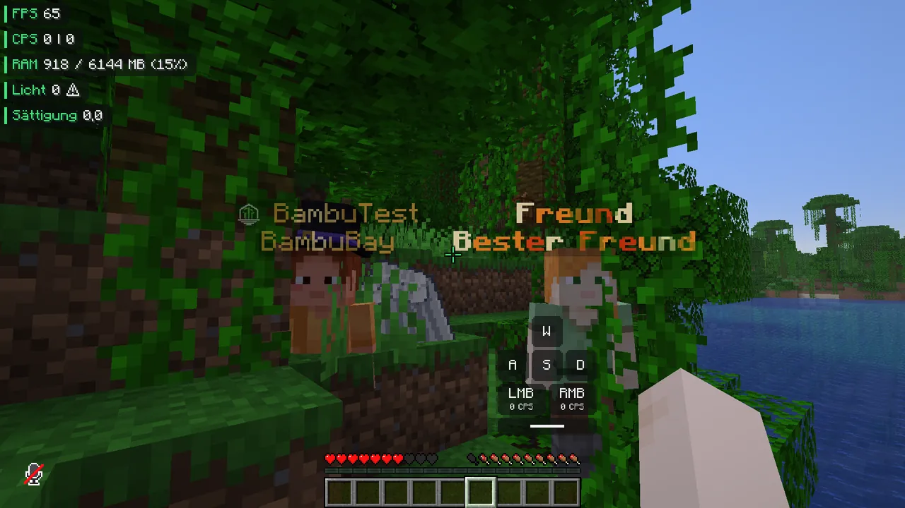
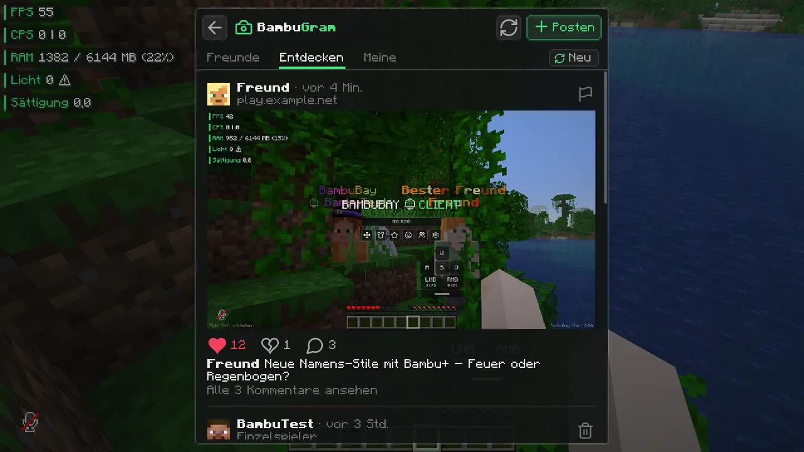
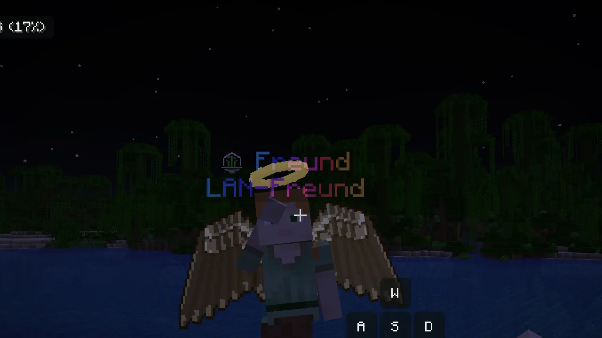

BambuBay Wiki
Alles, was du über den BambuBay Client wissen musst: installieren, bedienen, alle Module, Cosmetics, Emotes und was du tun kannst, wenn etwas nicht klappt.
01Installation
Mit dem BambuBay Launcher (empfohlen)
- Lade den Launcher auf der Startseite herunter und entpacke die ZIP.
- Starte das Setup. Warnt Windows SmartScreen, klicke auf „Weitere Informationen“ und dann „Trotzdem ausführen“ (der Installer ist nicht signiert).
- Melde dich im Launcher mit deinem Microsoft-Konto an und klicke auf Spielen.
Der Launcher lädt Minecraft, Fabric, Fabric API und die BambuBay-Mod automatisch und hält alles aktuell. Dazu kommt auf Wunsch ein Leistungspaket (siehe Mehr FPS).
Nur die Mod (Modrinth, Prism, CurseForge-App …)
- Installiere Fabric Loader (0.18.3 oder neuer) für Minecraft 1.21.11.
- Lege Fabric API und die
BambuBayClient-….jarin den Ordnermodsdeines Profils. - Starte das Spiel. Die Rechte Shift-Taste öffnet das BambuBay-Menü.
02Bedienung & Tasten
| Taste | Was passiert |
|---|---|
| Rechte Shift | Vormenü: Mod-Menü, HUD-Editor, Kosmetik, Bambu+, BambuGram, Freunde und Optionen |
| B halten | Emote-Rad: auf ein Emote zeigen und loslassen. Mausrad blättert. |
| C halten | Zoom (Mausrad ändert die Stärke) |
| Links-Alt halten | Schnellansicht: Kamera frei drehen, ohne die Laufrichtung zu ändern |
| F2 | Screenshot; danach fragt der Chat, ob du ihn im BambuGram teilen willst |
/bambugram | öffnet BambuGram direkt |
Alle Tasten änderst du unter Optionen → Steuerung → BambuBay.
Das Mod-Menü
- Klick auf eine Karte oder den Schalter schaltet ein Modul an oder aus. Aktive Module sind grün hervorgehoben.
- Zahnrad oder Rechtsklick öffnet die Einstellungen des Moduls, mit Vorschau bei HUD-Elementen.
- Einfach lostippen zum Suchen. Die Suche verzeiht Tippfehler, versteht englische Begriffe (brightness, coords) und findet Module auch über ihre Einstellungen. Enter öffnet den ersten Treffer.
- Die Menügröße stellst du unter Optionen → Menügröße ein (Klein, Normal, Groß, Wie Minecraft).

Alle Einstellungen liegen in config/bambubay/config.json. Ist die Datei kaputt, sichert die Mod sie als .broken und startet mit Standardwerten.
03Module
78 Module in sieben Kategorien. Keines verschafft einen unfairen Vorteil: Es gibt keine Reichweiten-, Auto-Klick-, X-Ray- oder Durch-Wände-Funktionen.
| Kategorie | Module |
|---|---|
| HUD | FPS, CPS, Ping, TPS, Uhr, Minecraft-Uhr, Blickrichtung, Blickinfo, Inventar, Musik-Overlay, Tempo, Koordinaten, Kompass, Biom, Keystrokes, Rüstung, Tränke, Zielanzeige, Item-Zähler, Combo, Reichweite, Server, Spieler online, Sitzung, RAM, Lichtlevel, Tageszähler |
| Optik | Fullbright, Nachtsicht ohne Flackern, Hand ausblenden, Low Fire, Zeit ändern, klares Wetter, Scoreboard, Bossleiste, Titel-Größe, Overlays (Kürbis, Frost, Portal, Totem-Animation …), Block-Umrandung |
| PvP | Crosshair mit Pixel-Editor, Treffer-Partikel, Treffer-Sound, Kill-Effekt, kein Schadens-Wackeln, festes Sichtfeld, Toggle Sprint, Item-Ansicht, Abklingzeiten, Bogen-Spannung, Sättigung, Kills, Totem-Zähler, Leben-Warnung, Treffer-Richtung, Rüstungs-Warnung, Hitboxen, Schnellansicht, Ping in Zahlen |
| Chat | Chat-Verbesserungen (Uhrzeit, doppelte zusammenfassen), Auto-GG, Erwähnungen, Namensschutz, Wortfilter |
| Komfort | Zoom, Auto-Reconnect, Trennen bestätigen, Auto-Respawn, Todespunkt, Haltbarkeit im Tooltip |
| Leistung | Entity-Culling, Blockentity-Culling, Partikel-Limit, Hintergrund-FPS, kein Menü-Blur, keine Wolken |
| Client | Einstellungen, Emotes, Kosmetik, Bambu+ |
Neu in 2.0
Blickinfo
Zeigt den Block oder das Wesen, auf das du schaust, mit Leben bei Mobs.
Inventar
Dein Inventar als kleines Raster im Bild.
Nachtsicht ohne Flackern
Kein Blinken mehr, wenn der Nachtsicht-Trank ausläuft.
Hand ausblenden
Nur die leere Hand oder Hand und Items, praktisch für Screenshots.
04HUD-Editor
- Öffnen über das Vormenü (Rechte Shift → HUD-Editor).
- Elemente mit der Maus ziehen, mit dem Mausrad die Größe ändern.
- Elemente, die du nicht verschoben hast, stapeln sich links automatisch, ohne sich zu überlappen.
- Unter Aussehen hat jedes Element: Ecken abrunden, Deckkraft des Hintergrunds und einen Farbstreifen links.

05Cosmetics
41 Cosmetics: Hüte, Mützen, Bandanas in 11 Farben, Kronen, Flügel, ein Panda-Begleiter und animierte HD-Umhänge. Öffnen über Rechte Shift → Kosmetik.
- Klick auf eine Karte legt an oder ab. Darüberfahren zeigt das Cosmetic zur Probe an deiner Figur (mit der Maus drehbar).
- Farbvarianten wählst du über die Punkte unter der Figur.
- Suche und Filter: einfach tippen; Chips oben filtern nach Art, „Angelegt“ zeigt nur, was du trägst.
- Hüte und Bandanas sitzen über dem Helm und über 3D-Skin-Layers, Flügel und Begleiter über dem Brustpanzer. Einstellbar im Modul „Kosmetik“ unter „Über 3D-Skin-Layer legen“.
- Andere sehen sie: Alle Spieler mit BambuBay auf demselben Server sehen deine Cosmetics, auch in LAN-Welten.

Eigene Umhänge
- Lege ein Bild in
config/bambubay/capes/(PNG, JPG oder animiertes GIF). - Klicke im Kosmetik-Menü auf Neu laden.
Erkannt werden komplette Umhang-Texturen (64×32-Aufteilung), nur der Umhang-Teil (22×17) oder ein normales Bild, das zugeschnitten wird. Eigene Umhänge siehst nur du.
06Emotes
- Emote-Rad: B halten, auf ein Emote zeigen, loslassen. Das Mausrad blättert durch alle Emotes.
- 26 Emotes, darunter Winken, Tanzen, Floss, Salto, Liegestütze, Schlafen und Dab. Cosmetics bewegen sich mit.
- Was im Rad liegt, legst du im Kosmetik-Menü im Reiter Emotes fest (Rechtsklick auf eine Karte).
- Laufen, Springen oder Angreifen beendet ein Emote. Die Kamera schaut dabei von vorne.
- Andere BambuBay-Spieler auf demselben Server sehen dein Emote nach etwa 0,15 Sekunden.

Eigene Emotes aus Blockbench
Lege eine *.animation.json (GeckoLib-Animation mit den Knochen bipedHead, bipedBody, bipedRightArm …) in config/bambubay/emotes/ und klicke im Kosmetik-Menü auf Neu laden. Molang, Keyframes (linear, catmullrom) und alle Loop-Modi werden unterstützt. Andere sehen eigene Emotes nur, wenn sie dieselbe Datei haben.
07Bambu+
Animierte Stile für dein Namensschild und deinen Namen in der Tab-Liste. Öffnen über das Vormenü (Stern) oder die linke Leiste im Mod-Menü.
- 19 Effekte: Regenbogen, Verlauf, Metallisch, Schimmer, Feuer, Chromatisch, Pulsieren, Leuchten, Tippen, Glitzer, Eis, Gift, Gold, Galaxie, Sunset, Ocean, Sakura, Matrix und Neon.
- Farben & Tempo: zwei Farbpaletten, Tempo-Regler, Fett und fertige Farbpaare.
- Zusatz-Schild: eine zweite Zeile mit eigenem Text (bis 16 Zeichen) über oder unter dem Namen.
- Links siehst du deine Figur mit Namensschild als Live-Vorschau.
- Andere BambuBay-Spieler sehen deinen Stil. „Stile anderer Spieler zeigen“ schaltet das für dich ab.

08BambuGram
Screenshots direkt aus dem Spiel teilen. Öffnen über das Vormenü (Kamera), die linke Leiste im Mod-Menü oder /bambugram.
- Feed: Reiter Freunde, Entdecken und Meine, sortiert nach Neu oder Top.
- Beiträge: Like (auch per Doppelklick aufs Bild), Dislike und Kommentare. Klick auf den Namen öffnet das Profil.
- Hochladen: Nach F2 fragt der Chat „Teilen?“. Oder links einen der letzten 60 Screenshots wählen, Bildtext (bis 150 Zeichen) schreiben und auf Wunsch den Servernamen zeigen.
- Löschen und Melden: Eigene Beiträge und Kommentare kannst du löschen (zweimal klicken), fremde Beiträge melden. Nach 3 Meldungen wird ein Beitrag ausgeblendet.
- Grenzen gegen Spam: 15 Beiträge pro Tag, 20 Sekunden zwischen zwei Beiträgen.

09Freunde
- Öffnen über Rechte Shift → Freunde.
- Freund hinzufügen: Minecraft-Namen ins Feld tippen und senden. Eingehende Anfragen sind gelb umrandet.
- Online-Freunde haben einen grünen Ring und zeigen, auf welchem Server sie spielen.
- Spieler mit BambuBay haben das BambuBay-Symbol neben dem Namen (abschaltbar unter Optionen → BambuBay-Symbol neben Namen).

10Musik-Overlay
Zeigt oben im Bild das laufende Lied mit Cover, Titel, Künstler und Fortschritt. Funktioniert mit Spotify, Apple Music, YouTube im Browser, Amazon Music, SoundCloud, Tidal, Cider und anderen Playern.
- Layout Normal, Kompakt oder Minimal; Albumfarbe als Hintergrund; ausblenden, wenn pausiert.
- Nur unter Windows. Ein kleines Skript liest die Windows-Medienanzeige (dieselbe wie im Lautstärke-Popup). Es steuert nichts, braucht keine Anmeldung, schickt nichts ins Internet und läuft nur, solange das Modul an ist.
11Mehr FPS
Die Leistungs-Module greifen sofort, ohne Chunks neu zu laden. Der Launcher installiert dazu auf Wunsch ein Leistungspaket: Sodium, Lithium, FerriteCore, EntityCulling, ImmediatelyFast und MoreCulling.
| Aufbau | Ø FPS | Schwächste 5 % |
|---|---|---|
| Nur Fabric API | 150 | 93 |
| Mit BambuBay-Mod | 153 | 110 |
| Mit Mod und Leistungspaket | 276 (+84 %) | 227 |
Gemessen in einer Dschungel-Welt, Sichtweite 16, 1280×720, 40 Sekunden Kameradrehung.
12Online-Funktionen & Datenschutz
Freunde, BambuGram und das Anzeigen von Cosmetics, Bambu+, Emotes und Symbol bei anderen Spielern laufen über den BambuBay-Server. Dafür schickt die Mod:
- deine Minecraft-UUID und deinen Namen (Anmeldung über Mojangs Sitzungsprüfung, dein Passwort oder Token verlässt nie deinen PC),
- den Namen des Servers, auf dem du spielst, und die UUIDs der Spieler in der Tab-Liste (damit nur Spieler auf demselben Server deine Cosmetics und Emotes sehen),
- deine gewählten Cosmetics, deinen Bambu+-Stil und gespielte Emotes,
- Bilder und Texte, die du selbst im BambuGram hochlädst. Bilder werden neu gespeichert, dabei fallen alle Metadaten weg.
Es gibt keine Werbung, kein Tracking und keine Weitergabe an Dritte. Alle Module funktionieren auch ohne Verbindung zum Server.
13Probleme lösen
Das Spiel stürzt beim Start ab
Prüfe, ob Fabric Loader 0.18.3+ und Fabric API für 1.21.11 installiert sind und nur eine BambuBay-Jar im mods-Ordner liegt. Schick uns sonst die Datei logs/latest.log (siehe Fehler melden).
Ich sehe die Cosmetics meiner Freunde nicht
Beide brauchen die aktuelle Mod-Version und müssen auf demselben Server oder in derselben LAN-Welt sein. Öffne das Freunde-Menü: Steht dort „Offline“, klicke auf „Erneut verbinden“.
Bandana oder Hut verschwindet unter dem Helm
Stelle im Modul „Kosmetik“ die Option „Über 3D-Skin-Layer legen“ auf „Immer“.
Das Musik-Overlay zeigt nichts
Das Overlay braucht Windows 10 oder 11 und einen Player, der in der Windows-Medienanzeige erscheint. Prüfe in den Modul-Einstellungen, ob die Quelle (z. B. Spotify) eingeschaltet ist.
Windows warnt beim Installer
Der Installer ist nicht digital signiert. Klicke auf „Weitere Informationen“ und dann „Trotzdem ausführen“.
Wie setze ich alle Einstellungen zurück?
Spiel schließen und config/bambubay/config.json löschen. Beim nächsten Start legt die Mod sie mit Standardwerten neu an.
14Fehler melden & Ideen
Fehler und Wünsche sammeln wir im Issue-Tracker auf GitHub. Du brauchst dafür ein kostenloses GitHub-Konto.
- Schau kurz nach, ob es den Fehler schon gibt.
- Klicke auf New issue und wähle „Fehler melden“ oder „Idee vorschlagen“.
- Beschreibe, was du gemacht hast, was passiert ist und was du erwartet hast. Hänge bei Abstürzen
logs/latest.logoder den Crash-Report auscrash-reports/an.